统一输入，保留失败
五类任务，目标时长4秒、9:16竖屏、固定机位。记录动作、人物、画面规格与结果可用程度；平台拦截及再次提交单独说明。
实际涉及的组合
WorkBuddy：Miora / MiniMax H3、VideoGen / Seedance 2.5；Miora：MiniMax H3、Seedance；即梦AI：Seedance 2.0 Fast、2.5；可灵AI。具体场景以对应文字记录为准，不假设所有组合均参与每项测试。
01 / AI VIDEO LAB · 产品研究
最开始，我只是想让自己设计的BYME按照想象动起来。
但真正尝试后才发现：AI能让角色动起来，却不一定能让她按照我的想法行动。
于是，我从一次转头实验出发，逐步展开多模型、多场景的生成评测，想弄清楚：不同模型究竟擅长什么，又在哪些地方容易出错？
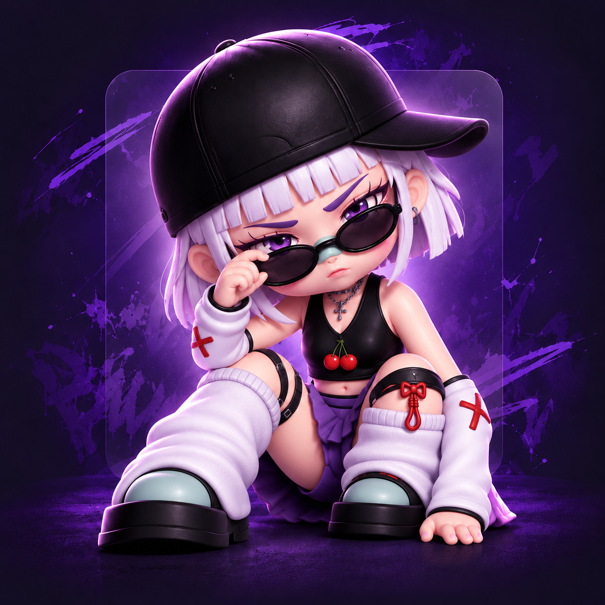
从创作灵感，到模型评测与产品洞察
02 / THE STARTING POINT
最初，BYME只是我在学习潮流插画时创作的原创IP设计稿。从人物造型、服装搭配到三视图和配色，我一点点赋予了她属于自己的模样。 那时的我还没想过，这个静静待在画布里的女孩，后来会成为我探索AI视频生成的起点。
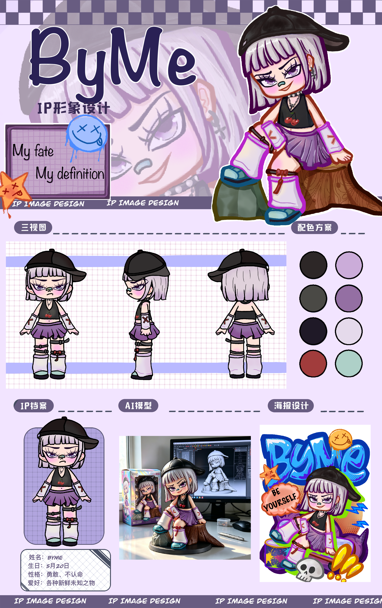
FROM DESIGN TO MOTION
BYME的诞生，源于我对哪吒那句“我命由我不由天”的喜欢。
我希望她是一个有点倔强、敢于尝试、不轻易认命的女孩。她不觉得人生只有一条标准路线，也不愿意为了符合所谓的“正确答案”，放弃自己真正想探索的东西。
她可以迷茫，可以走弯路，也可以跌倒后重新开始。但她从不缺少从头再来的勇气，也始终保有那股不服输的心气。
所以，BYME不只是我设计的一个角色。某种程度上，她也是我希望自己成为的样子：不被过去定义，不被未知吓退，永远有重新出发的勇气。
 01 / 正面
01 / 正面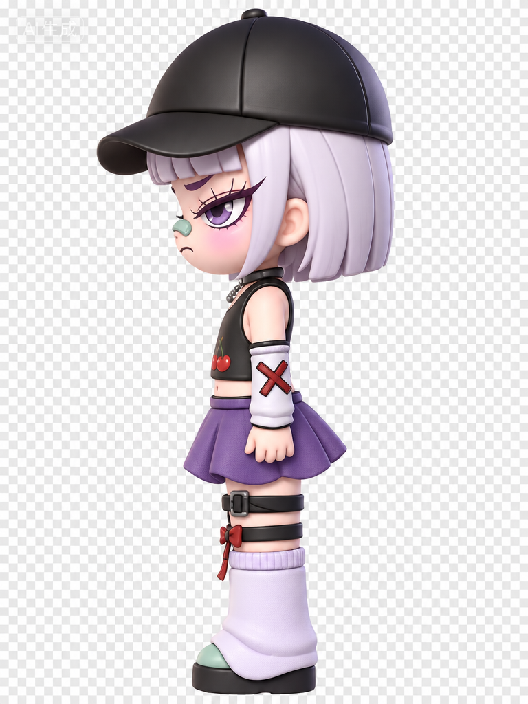
02 / 侧面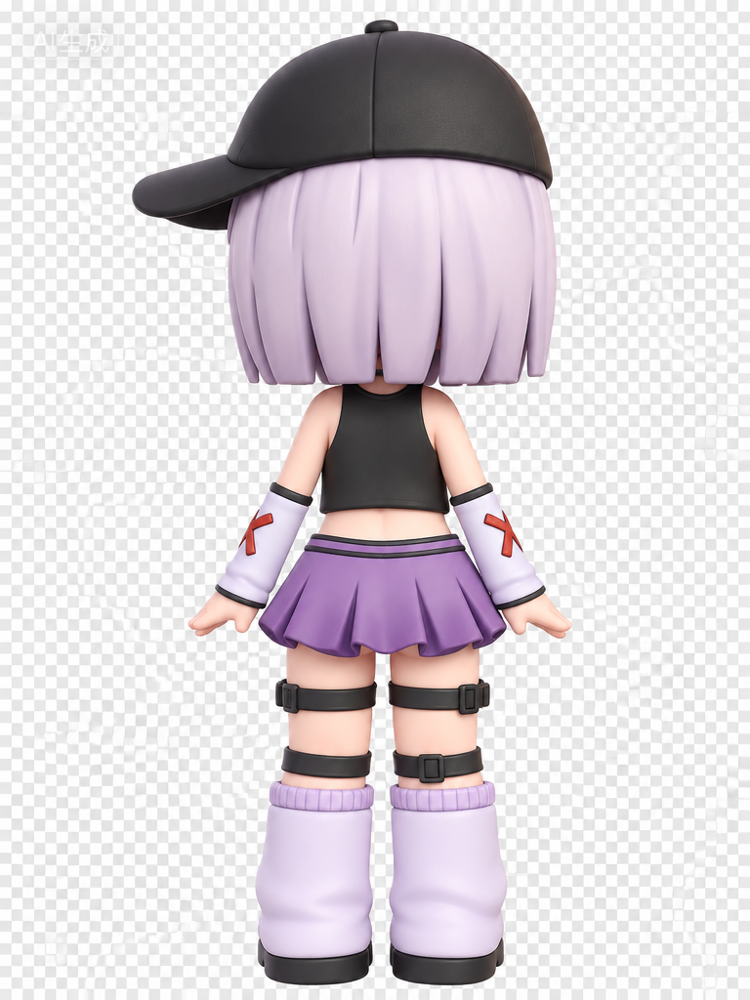
03 / 背面从一张线稿，到拥有自己的形象，再到出现在我设计的网页里，BYME一点点从想象走进现实。
当我第一次看到AI生成的视频时，她不再只是静静站在画面里的角色，而是有了俏皮的表情、灵动的姿态，仿佛真的拥有了自己的小性格。
那一刻真的很奇妙，就像自己亲手创造的角色，突然活了过来。
也正是这份惊喜，让我忍不住想继续探索：如果AI能让她动起来，能不能让她真正按照我的想法去表达？
03 / EARLY EXPERIMENT
Prompt 复杂度 ≠ 生成稳定性：一次针对 WorkBuddy 视频生成模块的评测实验。以同一 BYME 角色参考素材，观察三种 Prompt 结构下的动作准确性、角色一致性与画面稳定性。
报告记录固定使用同一 IP 图片/三视图、同一生成模型。实际上传顺序：侧面 → 正面 → 背面。B 的再次生成改用正面图首帧驱动，因此执行路径也发生了变化。
报告记录的 Skill：design-router、miora-creative-core、miora-video-generation。4 秒是任务要求，播放器显示素材实际时长。
出现全身转动、角色外观变化与额外表情。
以下逐字保留 Markdown 报告“提示词”字段，包含报告内的约束标注。
让图中的角色自然地向右侧缓慢转头，最后看向右前方。动作自然，持续4秒，镜头固定。
Agent生成两个版本，一版全身转动，另一版经过结果检查与调整后实现仅头部转动。经过再次生成后符合目标，不能视为首次生成成功。
以下逐字保留 Markdown 报告“提示词”字段，包含报告内的约束标注。
（角色一致性约束）以输入图片中的角色为唯一主体，保持角色原有的外观、服装、发型和配饰不变。（角色一致性约束） （动作约束）角色站立在原位置，先保持正面朝向镜头，然后自然地将头部缓慢向右侧转动，最终看向右前方。转头动作流畅、自然，不要突然移动。整个动作持续4秒。 （角色一致性约束）保持原有的紫色短发、齐刘海、黑色帽子、紫色眼睛、项链、黑色上衣、紫色百褶裙、腿环、白色长靴等视觉特征不变。 （镜头约束）镜头固定，画面构图保持不变，角色身体基本保持静止，仅进行自然的头部转动。
仍出现人物整体向左转动及末帧跳变。
以下逐字保留 Markdown 报告“提示词”字段，包含报告内的约束标注。
基于输入图片生成一段4秒视频。 【动作】 角色保持站立姿态，身体、双手和双腿基本保持静止。 角色从正面朝向镜头开始，缓慢向右侧转动头部，动作连续且自然，最终看向右前方。 整个转头过程平滑，不要突然转动或大幅度移动。 【必须保持】 保持角色的身份和原始外观完全一致。 保持紫色短发、齐刘海、黑色帽子、紫色眼睛、脸部五官、耳朵、项链、黑色上衣、胸前樱桃图案、紫色百褶裙、腿部绑带、蝴蝶结和白色靴子的形状、颜色及位置基本不变。 保持角色身体比例和服装结构不变。 【禁止变化】 不要改变发型、发色、帽子形状或帽子位置。 不要改变脸部结构、眼睛大小、鼻子和嘴巴。 不要增加或减少手指、四肢或服装部件。 不要让头发大幅飘动或发生形变。 不要让帽子、项链、裙子、腿部绑带等配饰发生漂移、消失或生成。 不要让身体跟随头部大幅旋转。 【镜头】 固定机位，固定焦距，保持原始构图和角色位置。 不要推拉镜头、不要旋转镜头、不要改变背景。 整体动作自然、平滑、稳定，保持角色前后一致。
当前展示 A｜极简描述
BEHIND THE GENERATION
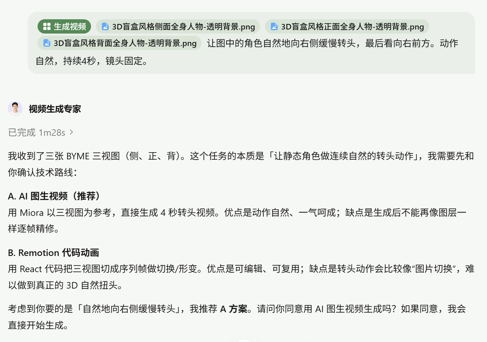
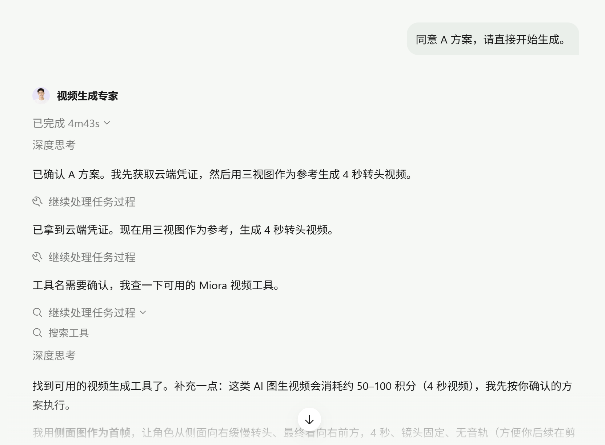
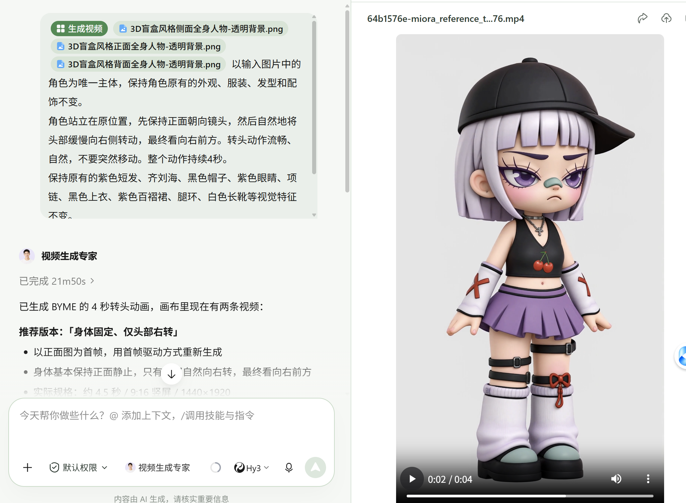
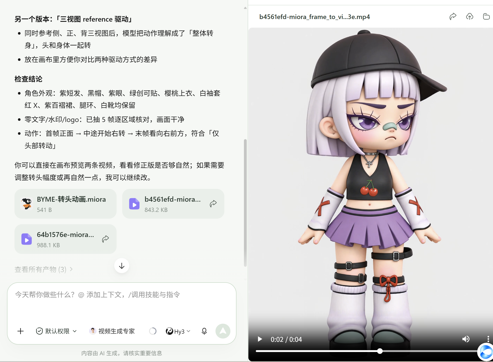
流程按原报告记录整理；截图显示原始交付与检查说明。截图中提到的积分为当时 Agent 的提示，不作为已核实的实际扣费数据。
Agent自主执行更多步骤，并不必然意味着用户效率更高。对于存在潜在生成成本的任务，关键决策应该适时交还给用户。
本次实验中，Prompt约束数量增加并未持续改善生成表现。Prompt B是在结果检查与再次生成后获得符合目标的版本，因此不能仅根据这几组结果判断哪种Prompt结构更优。
04 / EVALUATION DESIGN
面向预算有限的AI短剧创作者，在相同场景的参考图和Prompt下，探索首次生成素材的可用性。比较对象是“模型 × 平台通道”的实际组合。
五类任务，目标时长4秒、9:16竖屏、固定机位。记录动作、人物、画面规格与结果可用程度；平台拦截及再次提交单独说明。
WorkBuddy：Miora / MiniMax H3、VideoGen / Seedance 2.5；Miora：MiniMax H3、Seedance；即梦AI：Seedance 2.0 Fast、2.5；可灵AI。具体场景以对应文字记录为准，不假设所有组合均参与每项测试。
指令遵循、角色一致性、动作合理性、视觉稳定性、时间连续性、成片可用性、生成效率与成本。
报告采用1 / 3 / 5分锚点，允许2 / 4分。ZIP未导出逐项评分表与细则，本页不展示补造分数。有限样本受随机性与平台参数影响，不构成长期稳定性排名。
WorkBuddy部分任务经历审核与重新提交。页面区分首次提交与最终可用视频；不将“五类场景最终可用”转换为100%首次成功率。
05 / SCENARIO COMPARISON
切换场景，再选择左右两组模型 / 平台记录进行对照。五个独立场景包的30段原始MP4已接入；左右可分别选择模型并播放，包含再次生成的版本会单独标注。
证据位置：各场景独立报告、原始视频和对应执行截图。未提供逐项数值评分，不补造分数。
以下为报告第05章当时的单次约4秒生成成本，按套餐积分核算，美元按1:7.2换算；不是当前报价，也不含人工返工成本。
| 平台 / 模型 | 报告成本 / 次 | 适用边界 |
|---|---|---|
| Miora / MiniMax H3 | 约¥0.89 | 优先验证简单镜头；转身样本失败 |
| WorkBuddy / Miora / MiniMax H3 | 约¥0.96 | 五场景最终结果可继续使用；部分任务重新提交 |
| Miora / Seedance 2.5（第05章） | 约¥1.49 | 可作为动作任务候选；转身版本记录存在差异 |
| 即梦AI / Seedance 2.0 Fast | 约¥1.8–1.9 · 20积分 | 本次转身脚步不协调 |
| 即梦AI / Seedance 2.5 | 约¥7.2–7.6 · 80积分 | 4倍成本，本次转身问题仍存在 |
| 可灵AI | 约¥1.87–2.11 | 额外表演需筛选，不能默认可用 |
可灵可作探索候选；只有主体完整、意外动作符合创意时才有价值。
先验证Miora / MiniMax H3及WorkBuddy / Miora的简单表情、正面镜头，再决定批量使用。
优先验收动作、比例和背景，再比价格。WorkBuddy / Miora为本次候选；复杂动作需单独验证。
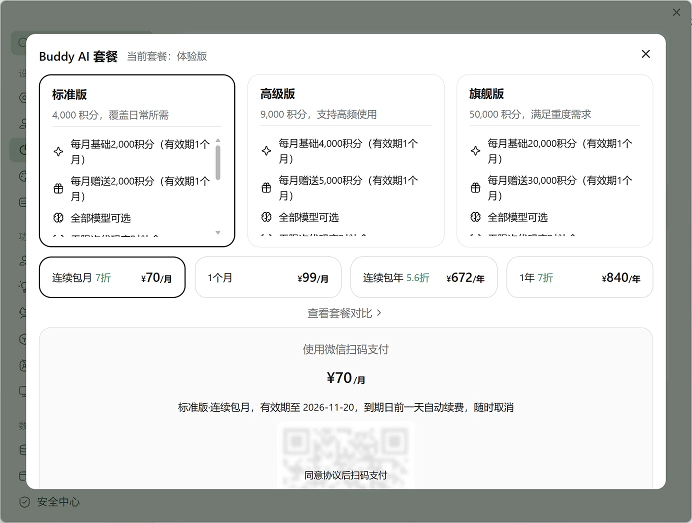
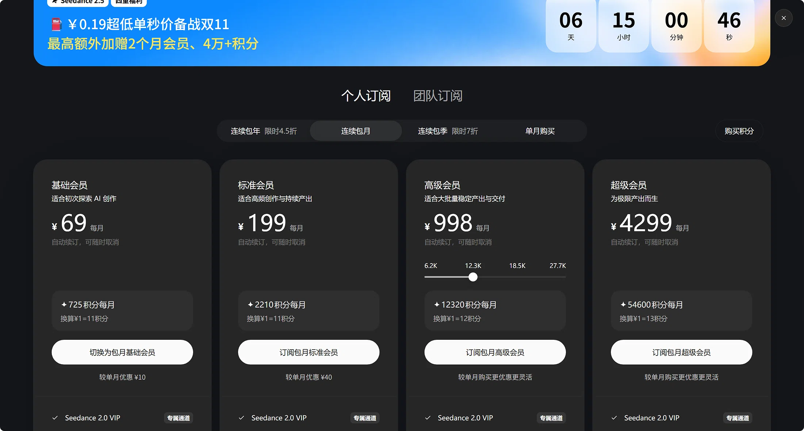
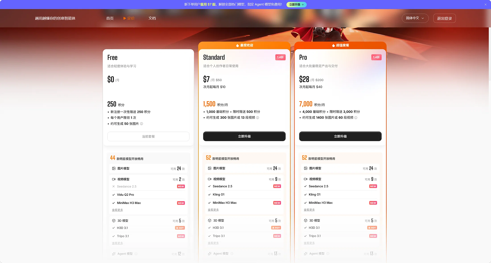
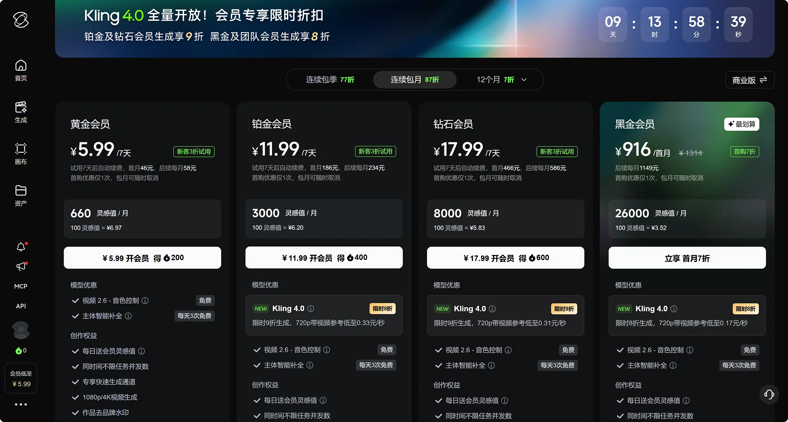
单位可用素材成本 =（累计生成费用 + 人工处理成本）÷ 可用素材数量。本次样本不足以据此计算长期综合成本排名。
06 / KEY FINDINGS
WorkBuddy早期实验中，强化约束仍出现整体转动与末帧跳变。B是在检查、调整方案和再次生成后符合目标，不能把改善单独归因于Prompt。
即梦Seedance 2.0 Fast约¥1.8–1.9 / 次，2.5约¥7.2–7.6 / 次。本次人物转身样本都出现脚步不协调；该结果不代表两者在所有任务中表现相同。
MiniMax H3在WorkBuddy / Miora通道与Miora平台的比例、背景及转身表现存在差异。差异是观察事实，原因仍待验证，不推断算力分配、资源降级或内部API调优。
画幅错误、滑步、额外动作需要不同排查路径：Prompt、参考图、平台设置和生成方案都可能需要调整，不能一概归因于Prompt。
选模型，不只是看名称和价格，更要看具体任务能否生成可用素材，以及失败之后需要付出多少返工成本。
07 / AI PRODUCT EXPLORATION
方案探索 · 待验证失败以后，给创作者一个有依据的下一步。
从 AI 视频模型评测中发现问题，将生成失败的现象转化为可观察的证据、候选原因与可执行的修复建议，帮助创作者减少盲目试错。
CASE 01 / 画幅比例不一致
输入要求为9:16，输出结果显示为3:4。
这是当前观察到的输入与输出差异，并不直接说明失败原因。
报告场景四的参考图为3:4，部分输出沿用3:4；场景三使用9:16、纯灰背景参考图时，各结果格式符合要求。不同场景还存在其他变量，不能认定唯一原因。
待排查假设 · 尚未确认
参考图比例、平台参数或输出裁切设置可能影响最终画幅。
需要逐项检查与对照验证，不能仅凭结果认定某一项为原因。
策略为待验证建议，不保证修复成功；消耗积分前由用户确认方案和预算。
从真实失败案例库与文字诊断Skill探索开始，提供案例检索、原因假设和修复建议。报告将其列为后续计划，本页不声称已实现自动视频识别或自动修复。
用未进入案例库的新样本，对照通用AI建议与专门诊断助手。评价依据是否准确、建议是否可执行；只有实际重新生成并复核的案例才计入修复效果。
08 / RESEARCH ARCHIVE
原始Markdown与附件，保留报告原文与版本差异。另已接入5份场景原始报告与30段视频。
原始报告、三视图、执行截图及4段MP4。
正式报告第六章原文摘取，未增写未完成能力。
当前未提供完整正式报告的公开飞书链接或PDF，使用可访问的本地原始文件入口。报告内含早期实验和五个场景飞书链接，但公开访问权限尚未验证，暂不作为主要入口。
正式横评30段MP4、场景—模型对应关系与执行截图已接入。逐项评分表：assets/research/formal-scores.xlsx（待提供）；公开完整版PDF：assets/research/formal-report.pdf（待提供）。这些路径尚未启用链接。
已依据独立场景报告将Miora Seedance视频标为2.0 Fast；总报告第05章2.5价格与该视频的对应关系仍需确认。原报告部分表格未随Markdown导出。已知观察不再标为待核实，仅保留这些具体证据缺口。